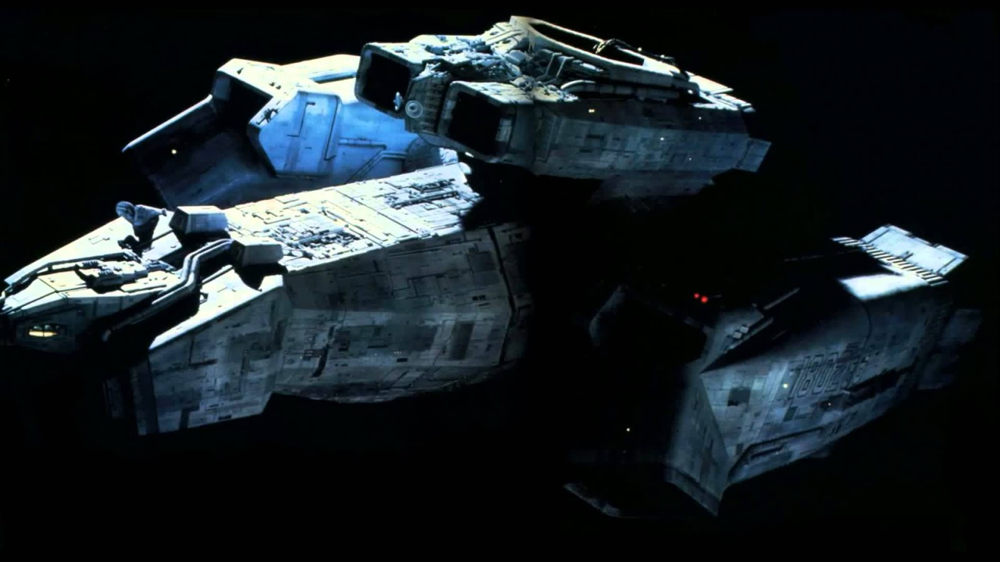
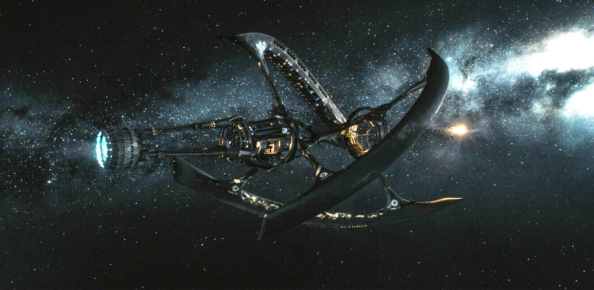
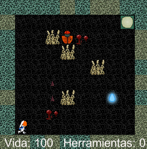
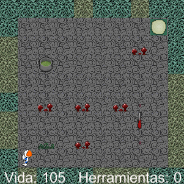
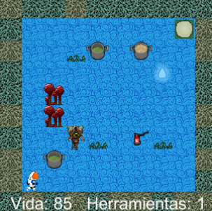
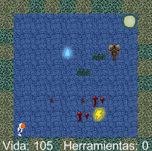
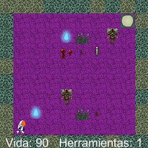
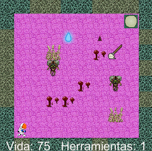
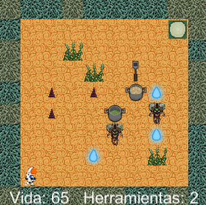
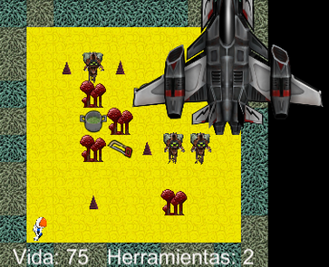

Piter Armstrong The Real Game
El Cpt. Piter Armstrong es el único superviviente de la nave Nostromo. La nave se encuentra a 2 mil millones de años luz del planeta LV-223, es el más cercano. La nave está invadida por alienígenas y los motores averiados, pero para repararlos deberá buscar las piezas de recambio que se encuentran en las diferentes bodegas. La nave aún tiene la suficiente carga en las baterías y combustible como para llegar a la estación espacial más cercana Soyuz para poder repostar y afrontar la vuelta al planeta Tierra.

Nave Nostromo

Estación Soyuz

Planeta LV-223
Mapas del juego:








